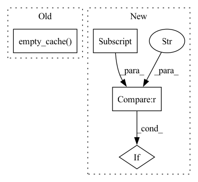

Pattern ID :1850
Before Change
checkpoint = torch.load(model_path, map_location=device)
self.load_state_dict(checkpoint, strict=False)
torch.cuda.empty_cache()
print(str(model_path) + " loaded!")
def forward(self, input_text):
raise NotImplementedAfter Change
checkpoint = torch.load(model_path, map_location=device)
checkpoint_load = {}
for k, v in checkpoint.items():
if k[:7] == "module." :
checkpoint_load[k[7:]] = v
else :
checkpoint_load[k] = vIn pattern: SUPERPATTERN
Frequency: 3
Non-data size: 4
Instances Fragment ID: 8351999
Project Name: 920232796/bert_seq2seq_ddp
Commit Name: 4812dc36a890b111178e176e2d4308a9b0388465
Time: 2022-05-01
Author: 920232796@qq.com
File Name: bert_seq2seq/basic_bert.py
M Class Name: BasicBert
N Class Name: BasicBert
M Method Name: load_all_params(3)
N Method Name: load_all_params(3)
M Parent Class: nn.Module
N Parent Class: nn.Module
M File Name: bert_seq2seq/basic_bert.py
N File Name: bert_seq2seq/basic_bert.py
M Start Line: 73
M End Line: 75
N Start Line: 73
N End Line: 80
Before Change
def load_all_params(self, model_path, device="cuda"):
checkpoint = torch.load(model_path, map_location=device)
self.load_state_dict(checkpoint, strict=False)
torch.cuda.empty_cache()
print(str(model_path) + " loaded!")
def forward(self, x):
raise NotImplementedAfter Change
checkpoint_load = {}
for k, v in checkpoint.items():
if k[:7] == "module." :
checkpoint_load[k[7:]] = v
else :
checkpoint_load[k] = v Fragment ID: 8352002
Project Name: 920232796/bert_seq2seq_ddp
Commit Name: 4812dc36a890b111178e176e2d4308a9b0388465
Time: 2022-05-01
Author: 920232796@qq.com
File Name: bert_seq2seq/basic_bert.py
M Class Name: BasicGPT
N Class Name: BasicGPT
M Method Name: load_all_params(3)
N Method Name: load_all_params(3)
M Parent Class: nn.Module
N Parent Class: nn.Module
M File Name: bert_seq2seq/basic_bert.py
N File Name: bert_seq2seq/basic_bert.py
M Start Line: 108
M End Line: 110
N Start Line: 114
N End Line: 123
Before Change
outputs_shape[0] = len(dataset)
outputs = torch.zeros(tuple(outputs_shape),device=device)
for i in range(len(dataset)):
torch.cuda.empty_cache()
outputs[i,:,:,:,:] = model(dataset[i][0].unsqueeze(0).to(device))
out_dataset = TensorDataset(outputs,labels)
print("Calibrating...")
for lam in reversed(lambdas):After Change
alpha = config["alpha"]
delta = config["delta"]
device = config["device"]
if config["uncertainty_type"] == "softmax" :
lambdas = torch.linspace(config["minimum_lambda_softmax"],config["maximum_lambda_softmax"],config["num_lambdas"])
else:
lambdas = torch.linspace(config["minimum_lambda"],config["maximum_lambda"],config["num_lambdas"]) Fragment ID: 8352000
Project Name: aangelopoulos/im2im-uq
Commit Name: 05968a29644b73300b664693b0cf7ce059df526f
Time: 2021-06-23
Author: angelopoulos@n0024.abc0
File Name: core/calibration/calibrate_model.py
M Class Name: AnonimousClass
N Class Name: AnonimousClass
M Method Name: calibrate_model(3)
N Method Name: calibrate_model(3)
M Parent Class:
N Parent Class:
M File Name: core/calibration/calibrate_model.py
N File Name: core/calibration/calibrate_model.py
M Start Line: 58
M End Line: 72
N Start Line: 69
N End Line: 86